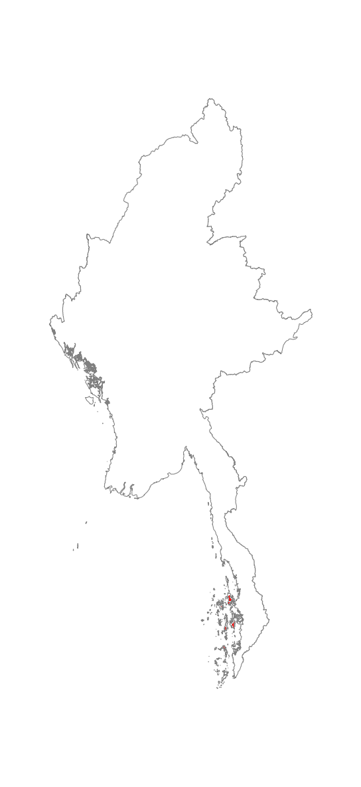

Tanintharyi island rainforest
Authors: N.J. Murray, R. Tizard, D.A. Keith
Myanmar ecosystem names: Tropical rainforest [Kress et al. (2003)], Lowland evergreen rainforest [Connette et al. (2016)]
Biome: Tropical and subtropical forests (T1)
Functional Group: T1.1
Global classification: MMR-T1.1.1
IUCN Status: Vulnerable (Least Concern – Vulnerable)
Ecosystem Photo
Ecosystem Map

Description Tanintharyi island rainforest occurs on offshore islands across Tanintharyi, including the Myeik archipelago. It is a lowland, primarily evergreen, forest ecosystem that has some maritime influence. It shows a tolerance of salty ocean seaspray and historically received much of its nutrient input from nesting seabird populations that have subsequently collapsed. It occurs across a wide range of island types including limestone, rubble and sand islands. The canopy is primarily evergreen Dipterocarpaceae (Tagane et al., 2019). Stamp (1924b) reported forests of “tall varied trees who dense canopy, cutting off nearly all light from the ground, is made more intense by the wealth of woody climbers which have struggled upwards to reach the light”.
Distribution Occurs on offshore islands in Tanintharyi state.
Characteristic Native Biota Largely unknown but probably moderately diverse. A recent survey of the Myiek archipelago reported a total of 305 species belonging to 241 genera and 91 families (Tagane et al. 2019). Surveys of Lampi Island marine park indicated 20 species of Dipterocarpaceae. The islands support several localized species along the coastal edges including Great-billed Heron Ardea sumatrana, Beach Thick-knee Esacus magnirostris (NT) and Black-naped Tern Sterna sumatrana, and Collared Kingfisher Todiramphus chloris. The islands also support a range of nomadic frugivores including Nicobar Pigeon Caloenas nicobarica (NT), Large Green-pigeon Treron capellei (VU), Pied Imperialpigeon Ducula bicolor, and Plain-pouched Hornbill Rhyticeros subruficollis (VU). The islands also support a population of tool using Long-tailed Macaque Macaca fascicularis (VU).
Abiotic environment This ecosystem occurs on offshore islands exposed to the influence of maritime salt. Largely monsoonal, with a minimum temperature of 21 degrees in December to a maximum of 28.8 in August. Precipitation is highly seasonal, with a dry season occurring from November to March followed by a strong wet season from May to October (Oo et al., 2019).
Key processes and interactions This ecosystem received much of its nutrients from nesting seabird populations that are mostly no longer present. Dispersal is similarly mediated by mobile fauna, and endemism due to isolation is likely to be high.
Major threats Unregulated tourism development is the principal threat to this ecosystem (UNESCO, 2014).
Ecosystem collapse definition This ecosystem is regarded as collapsed when its area has declined to zero, when the proportion of the ecosystem considered primary forest declines to 0.
Assessment summary This ecosystem is broadly distributed across many isolated islands in southern Myanmar, but there is an expected reduction in climate suitability over the next three decades. Threats from humans and biotic degradation are expected to be low, as confirmed by an analysis of the Forest Landscape Integrity Index. The ecosystem qualified for listing as Vulnerable under Criterion C, with a plausible range of Least Concern – Vulnerable. Vulnerable (Least Concern – Vulnerable).
Assessment information| Criteria | Status | |
|---|---|---|
| Criterion A | A1 | DD |
| A2a | DD | |
| A2b | DD | |
| A3 | DD | |
| Criterion B | B1 | LC |
| B2 | LC | |
| subcriteria | NA | |
| B3 | LC | |
| Criterion C | C1 | DD |
| C2a | VU(LC-VU) | |
| C2b | DD | |
| C3 | DD | |
| Criterion D | D1 | DD |
| D2a | DD | |
| D2b | LC | |
| D3 | LC | |
| Criterion E | E | NE |
Assessment outcome Vulnerable (Least Concern – Vulnerable)
Year published 2020
Date assessed 20th January 2020
Assessment credits
Assessed by: Nicholas Murray
Reviewed by: David Keith
Contributions by: Lee Grismer
Criterion A No time-series map data was available for assessing reduction in distribution of this ecosystem over any of the assessment time frames. Data Deficient.
Criterion B AOO and EOO were measured as 206 10 x 10 km grid cells and 50,337 km2, respectively. There is no evidence that suggests this ecosystem should meet the criteria to be listed as Near Threatened. The ecosystem is assessed as Least Concern under Criterion B1 and B2. Least Concern.
TEST
import ee
from gee_redlist.ee_rle import make_eoo, area_km2
from google.auth import default
# Use Application Default Credentials (ADC) from GOOGLE_APPLICATION_CREDENTIALS
# This works both locally (after gcloud auth) and in CI/CD (with Workload Identity)
credentials, _ = default(scopes=[
'https://www.googleapis.com/auth/earthengine',
'https://www.googleapis.com/auth/cloud-platform'
])
ee.Initialize(credentials=credentials, project='goog-rle-assessments')
print(f'ecosystem_image: {ecosystem_image}')
asset_id = ecosystem_image['asset_id']
pixel_value = int(ecosystem_image['pixel_value'])
ee_image = (
ee.Image(ecosystem_image['asset_id'])
.eq(pixel_value)
.selfMask()
)
print(f'ee_image: {ee_image.getInfo()}')
eoo_polygon = make_eoo(ee_image)
print(f'EOO area: {area_km2(eoo_polygon).getInfo()} km²')ecosystem_image: {'asset_id': 'projects/goog-rle-assessments/assets/mm_ecosys_v7b', 'pixel_value': '52'}
ee_image: {'type': 'Image', 'bands': [{'id': 'b1', 'data_type': {'type': 'PixelType', 'precision': 'int', 'min': 0, 'max': 1}, 'dimensions': [14299, 23576], 'crs': 'EPSG:4326', 'crs_transform': [0.0008084837557075694, 0, 89.60991403135986, 0, -0.0008084837557075694, 28.548369897789982]}], 'properties': {'system:footprint': {'type': 'LinearRing', 'coordinates': [[94.66768735253133, 28.548775583027798], [93.22272474215634, 28.548775580809586], [91.41652148658464, 28.548775539452144], [89.60939625454633, 28.54877430628462], [89.60949715757825, 9.485667642440385], [91.41652148658464, 9.486595817478428], [92.86148408075269, 9.486595814990817], [94.30644671824773, 9.486595784089035], [95.39016867380931, 9.48715124036664], [96.47389058147114, 9.486595770655939], [97.91885317497325, 9.486595836813008], [99.36381579356966, 9.486595799973498], [101.1708401374696, 9.48566765739743], [101.17094098108427, 28.548774348455886], [99.00257513499045, 28.548775586792935], [97.55761254104706, 28.54877552452014], [95.75140925342585, 28.548775587887942], [94.66768735253133, 28.548775583027798]]}}}
EOO area: 19278.179506419267 km²Criterion C An environmental suitability model (Ferrer-Paris et al. 2019; see methods) suggests that reductions in climate suitability will occur with an extent and severity to meet the category thresholds for Vulnerable under Criterion C2a. Variation in the outcomes of the modelled scenarios suggested that the ecosystem could potentially meet thresholds for Least Concern to Vulnerable, and therefore the ecosystem is assessed as Vulnerable (the most commonly returned result from all scenarios), with plausible bounds of Least Concern – Vulnerable. Vulnerable (Least Concern – Vulnerable).
Criterion D Analyses of a dataset that depicts the distribution of primary forests in South-East Asia (Potapov et al. 2019) suggest that 74.9% of the remaining extent of this ecosystem is primary forest. If 100% of the ecosystem is assumed to be primary forest in 1750, we estimate a 25.1% loss in primary forest extent since 1750. Here we assume that loss of primary forest extent has a relative severity of >90%, and the ecosystem is assessed as Least Concern under Criterion D3. Analyses of the full time-series of primary forest data (n = 18) suggests an 8.1% reduction of primary forest in this ecosystem over the period 2000-2017. A linear model fit to this dataset suggests that primary forest cover in this ecosystem will not decline sufficiently to meet any category thresholds over a 50 year period (1984-2034). The ecosystem is assessed as Least Concern under Criterion D2b. Least Concern. 
Criterion E No models were used to assess Criterion E. Not Evaluated.